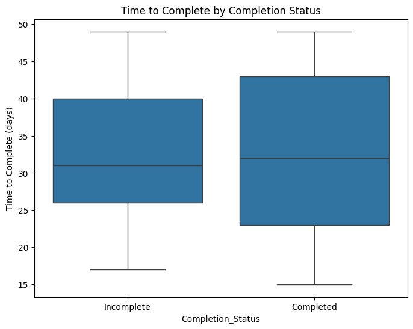
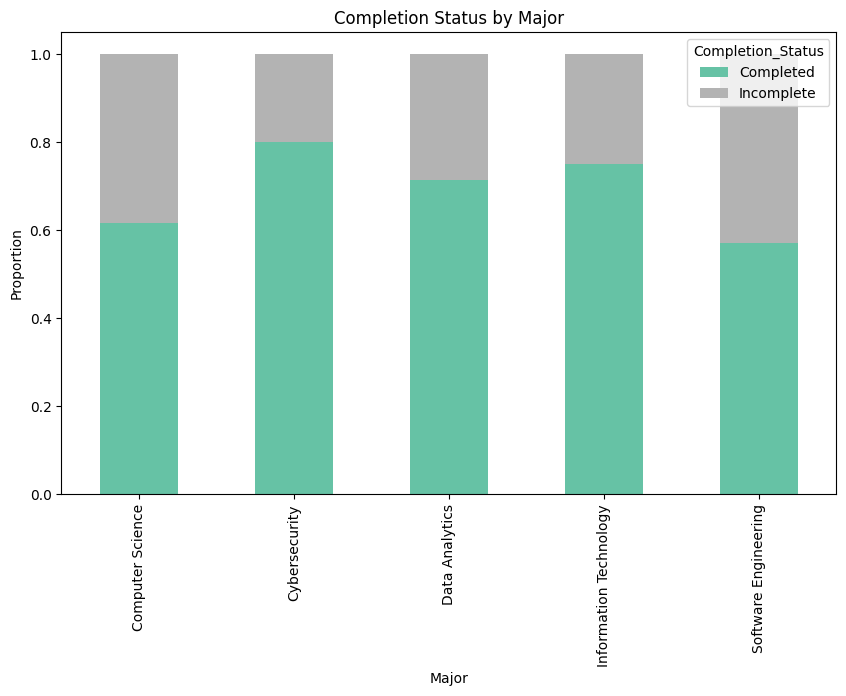
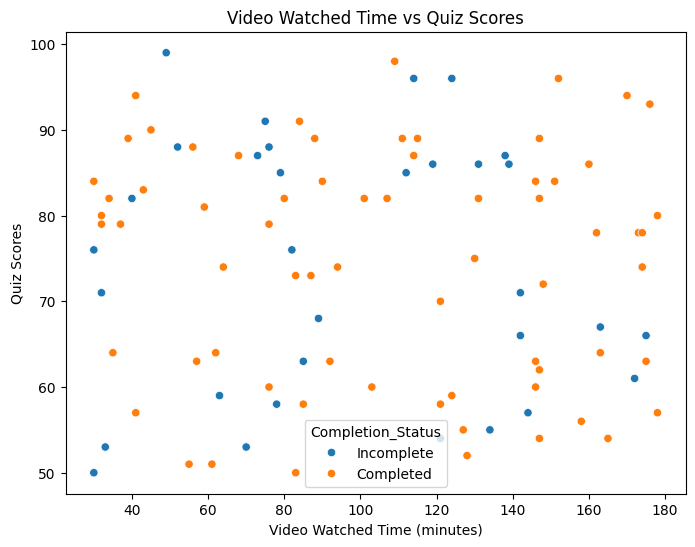

Project Overview
Leveraged data analysis to identify key engagement metrics (logins, video watch time, quiz scores) and predict student success in online courses, enabling educators to improve course design and reduce dropout rates.
Key Contributions
Data Analysis
Cleaned and analyzed 10,000+ student records from LMS (Moodle/Canvas) using Python (Pandas, NumPy).
Insights Generated
Found a 0.72 correlation between video watch time and quiz scores, highlighting the importance of multimedia content.
Predictive Modeling
Built a logistic regression model (Scikit-learn) to flag at-risk students with 85% accuracy.
Visualization
Created interactive dashboards (Tableau) to track engagement trends by major/course difficulty.
Tools & Technologies
Python
Pandas
NumPy
Scikit-learn
Matplotlib/Seaborn
Jupyter Notebook
Sample Insights

This is a box plot used for comparative analysis of "Time to Complete (days)" based on Completion Status (Incomplete vs Completed)

This is a stacked bar chart used for categorical comparative analysis of "Completion Status by Major."

This is a scatter plot used for correlation analysis between video watched time (minutes) and quiz scores, categorized by completion status.